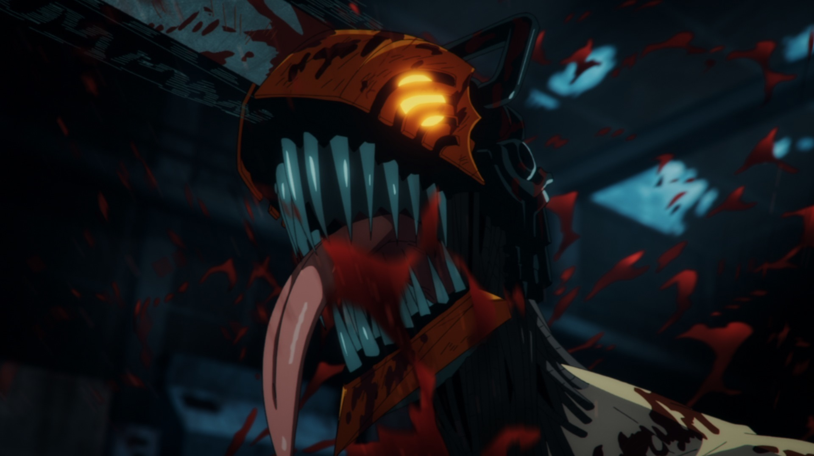

Following a betrayal, a young man left for the dead is reborn as a powerful devil-human hybrid after merging with his pet devil and is soon enlisted into an organization dedicated to hunting devils.
When his father died, Denji was stuck with a huge debt and no way to pay it back. Thanks to a Devil dog he saved named Pochita, he's able to survive through odd jobs and killing Devils for the Yakuza. Pochita's chainsaw powers come in handy against these powerful demons. When the Yakuza betrays him and he's killed by the Zombie Devil, Pochita sacrifices himself to save his former master. Now Denji has been reborn as some kind of weird Devil-Human hybrid. He is now a Chainsaw Man!